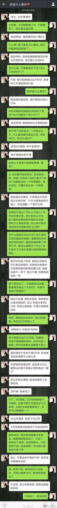

#姣姣#让我看一段对话，想听听我的看法。
我先问她怎么看，她模糊觉得女孩不大对，但又觉得女方父母多要彩礼也有道理，觉得是给女儿婚姻加道防护。她想起来我之前给她讲过的案例，恋爱期间男方热烈追求，把女方娶到家后就变脸。
我说，看起来这很是个传统婚姻，女方要到男方家跟对方父母一起生活，本来没什么评论的必要。因为我赞同的婚姻形式是夫妻两人都要离开各自父母家庭，住在自己独立的房子里。
对话里让人生气的是女生，是个完全没什么脑子的蠢货，没有任何自己的主见和想法，男朋友强势些就听男朋友的，自己父母闹就觉得该听父母的。说好听些是和稀泥，但这种墙头草式的和稀泥，向来没什么好结果。
男生后来决意分手做得对。男生女生两人间看起来确实有感情基础，但婚姻更需要信任和承诺。女生及父母表现破坏了信任。
总之，女孩在这种"嫁"到对方家庭里的婚姻里，先天就把自己放在弱势位置上，讨价还价的过程，感觉像是在卖东西。而被标价的这个女孩，脑子还一塌糊涂。这才是这段对话里最让我难受的地方。
我先问她怎么看，她模糊觉得女孩不大对，但又觉得女方父母多要彩礼也有道理，觉得是给女儿婚姻加道防护。她想起来我之前给她讲过的案例，恋爱期间男方热烈追求，把女方娶到家后就变脸。
我说，看起来这很是个传统婚姻，女方要到男方家跟对方父母一起生活，本来没什么评论的必要。因为我赞同的婚姻形式是夫妻两人都要离开各自父母家庭，住在自己独立的房子里。
对话里让人生气的是女生，是个完全没什么脑子的蠢货，没有任何自己的主见和想法，男朋友强势些就听男朋友的，自己父母闹就觉得该听父母的。说好听些是和稀泥，但这种墙头草式的和稀泥，向来没什么好结果。
男生后来决意分手做得对。男生女生两人间看起来确实有感情基础，但婚姻更需要信任和承诺。女生及父母表现破坏了信任。
总之，女孩在这种"嫁"到对方家庭里的婚姻里，先天就把自己放在弱势位置上，讨价还价的过程，感觉像是在卖东西。而被标价的这个女孩，脑子还一塌糊涂。这才是这段对话里最让我难受的地方。
- 